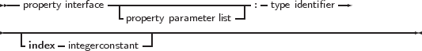
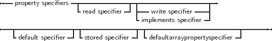

Classes can contain properties as part of their fields list. A property acts like a normal
field, i.e. its value can be retrieved or set, but it allows to redirect the access of the field
through functions and procedures. They provide a means to associate an action with an
assignment of or a reading from a class ’field’. This allows e.g. checking that a value is valid
when assigning, or, when reading, it allows to construct the value on the fly. Moreover,
properties can be read-only or write only. The prototype declaration of a property is as
follows:
_________________________________________________________________________________________________________
Properties




___________________________________________________________________
A read specifier is either the name of a field that contains the property, or the name of a
method function that has the same return type as the property type. In the case of a simple type,
this function must not accept an argument. In case of an array property, the function must accept
a single argument of the same type as the index. In case of an indexed property, it must accept a
integer as an argument.
A read specifier is optional, making the property write-only. Note that class methods cannot be
used as read specifiers.
A write specifier is optional: If there is no write specifier, the property is read-only. A write
specifier is either the name of a field, or the name of a method procedure that accepts as a sole
argument a variable of the same type as the property. In case of an array property, the procedure
must accept 2 arguments: the first argument must have the same type as the index, the second
argument must be of the same type as the property. Similarly, in case of an indexed property, the
first parameter must be an integer.
The section (private, published) in which the specified function or procedure resides is
irrelevant. Usually, however, this will be a protected or private method.
For example, given the following declaration:
Type
MyClass = Class
Private
Field1 : Longint;
Field2 : Longint;
Field3 : Longint;
Procedure Sety (value : Longint);
Function Gety : Longint;
Function Getz : Longint;
Public
Property X : Longint Read Field1 write Field2;
Property Y : Longint Read GetY Write Sety;
Property Z : Longint Read GetZ;
end;
Var
MyClass : TMyClass;
The following are valid statements:
WriteLn (’X : ’,MyClass.X);
WriteLn (’Y : ’,MyClass.Y);
WriteLn (’Z : ’,MyClass.Z);
MyClass.X := 0;
MyClass.Y := 0;
But the following would generate an error:
MyClass.Z := 0;
because Z is a read-only property.
What happens in the above statements is that when a value needs to be read, the compiler inserts
a call to the various getNNN methods of the object, and the result of this call is used. When an
assignment is made, the compiler passes the value that must be assigned as a parameter to the
various setNNN methods.
Because of this mechanism, properties cannot be passed as var arguments to a function or
procedure, since there is no known address of the property (at least, not always).